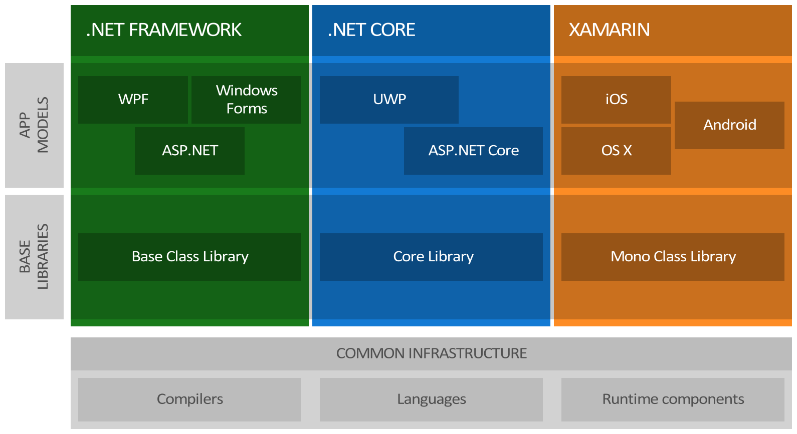
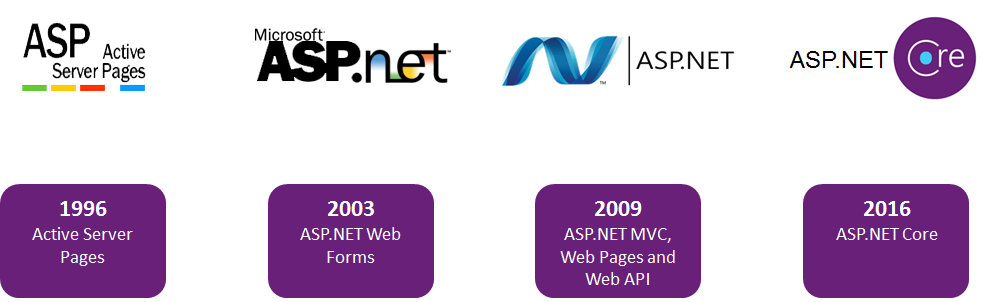
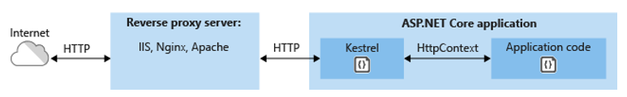

.NET Framework
Plataforma de desarrollo de proposito general desarrollada por Microsoft que soporta la compilación y ejecución de aplicaciones.
Esta compuesto de:
Lenguajes y Compiladores para los lenguajes: no generan código nativo, sino código IL (intermediate language).
Runtime de ejecución: interpreta el código IL y lo convierte a código nativo que es ejecutado por la plataforma.
Base Class Library: librería base.
Funcionamiento del framework:
Ecosistema .NET

Full .NET Framework: incluye todas las APIS y asegura compatibilidad con todas las librerías y frameworks ya conocidos. Solamente corre en Windows y por lo general viene con el sistema operativo. Pesado y monolitico.
.NET Core: framework pequeño, modular - descargo lo que necesito -, side by side y que corre en Windows, Linux y iOS. Como frameworks de alto nivel tenemos ASP.NET CORE y Universal Windows Platform.
Xamarin: se monta sobre la misma infraestructura en común que los otros y tiene su propia BCL y frameworks para el desarrollo de aplicaciones mobile.
.NET Core
Es una versión modular de .NET Framework diseñada para que funcione en todas las plataformas.
Modular
Multiplataforma
Open Source
CLI
.NET Core es el nuevo framework open source de .NET escrito totalmente desde cero. Incluye un subconjunto de la versión completa de .NET Framework y fue diseñado de forma modular para que sea portátil entre plataformas.
Open Source: compiladores, runtime, BLC.
Multiplataforma: funciona en Windows, Linux y iOS.
Modular: solo usas lo que necesitas (Nuget).
CLI: nos provee de herramientas de línea de comando.
.NET Core es open source, incluyendo el runtime y las librerías que componen el framework. Todo el código fuente está disponible en GitHub.
.NET CLI
Es una herramienta de línea de comando que nos permite compilar, desplegar y administrar aplicaciones .NET Core en todas las plataformas.
dotnet new mvc
dotnet restore
dotnet run
Desde el surgimiento de .NET Core fue sufriendo algunos cambios pasando del comando dnx o dnuv hasta dotnet.
new
restore
run
build
publish
test
packz
CLI nos permite montar herramientas de nivel superior, como entornos de desarrollo integrado (IDEs), editores y build orchestrators.
ASP.NET
ASP.NET es el framework de desarrollo web de Microsoft. Esta herramienta nos permite construir diferentes tipos de soluciones webs (aplicaciones, sites y sevicios) del tipo cliente-servidor.
Las alternativas disponibles son:
Web: MVC, Web Forms, Web Pages.
APIs: Web API
RealTime: SignalR
Evolución de ASP.NET

Los principales hitos de este framework a lo largo de su historia fueron:
ACTIVE SERVER PAGES: programación en vbscript similar a php.
ASP.NET WebForm: en pleno surgimiento de la web, se tuvo la necesidad de atraer desarrolladores de aplicaciones de escritorio a la plataforma web.
ASP.NET MVC: integración con los estandares web (Javascript, HTML, etc).
ASP.NET CORE: modular, preparado para el cloud, multi plataforma, desacoplado del servidor y sistema operativo.
Las necesidades de las aplicaciones web fueron cambiando a traves de los años, hoy hay una necesidad de estar conectados todo el tiempo, sin embargo hace 10 años atrás la necesidad principal era servir documentos. En el medio encontramos el surgimiento de los e-shops, aplicaciones backends, redes sociales, etc.
ASP.NET Core
ASP.NET Cores es un framework open-source y multi-plataforma para construir modernas aplicaciones conectadas a internet basadas en la nube, como web apps, IoT apps y mobile backends.
Características principales:
Modular
Preparado para el cloud
Open Source
Editores o herramientas de desarrollo
Cross Platform
ASP.NET Core tiene una serie de cambios arquitectonicos que resultan en un framework mucho más ligero y modular.
Unifación proceso de creación de aplicaciones web UI y web API.
Intregación con modernos frameroks client-side y workflows de desarrollo (gulp, grunt, bower, bootstrap, knockout.js, angular, less, sass, typescript, etc).
Inyección de dependencias integrado.
Nuevo HTTP request pipeline, mucho más ligero y modular.
Capacidad para alojar en IIS or auto-hostearlo en nuestros propios procesos.
Construido en .NET Core, soportando escenarios side-by-side.
Nuevas herramientas que simplifican el desarrollo de aplicaciones web modernas.
Open source y centrado en la comunidad.
Sistema de configuración basado en la nube.
Por dentro
Program class
Startup
Services
Middleware
Host and Servers
Content Root
Web Root
Configuration
Enviroments
Kestrel
Kestrek es un servidor de aplicaciones ASP.NET Core multi-plataforma, asincronico, basado en Libuv (librería I/O async cross-platform).

Es el web server que ASP.NET Core incluye por default cuando creamos un nuevo proyecto.
Apache como Reverse proxy
¿Por qué Apache?
¿Por que Reverse proxy?
¿Y como le hago?
Conf apache
En /etc/httpd/conf/extra/httpd-vhosts.conf
<VirtualHost *:80>
ServerName dotnet.com
ProxyPreserveHost on
ProxyPass / http://0.0.0.0:5000/
ProxyPassReverse / http://0.0.0.0:5000/
ErrorLog "/var/log/httpd/dotnetcom-error_log"
CustomLog "/var/log/httpd/dotnetcom-access_log" common
</VirtualHost>
agregar el dominio al hosts
arrancar apache con 'systemctl start httpd'
Systemd
¿Qué es?
En /etc/systemd/system
[Unit]
Description=Sitio web dotnet
[Service]
Type=simple
PIDFile=/run/appDemo.pid
ExecStart=/usr/bin/dotnet /srv/appDemo/demo-aspnetcore.dll
Environment=ASPNETCORE_ENVIRONMENT=Production
ExecStopPost=/usr/bin/rm -f /run/appDemo.pid
Restart=always